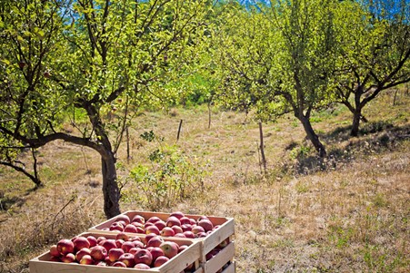
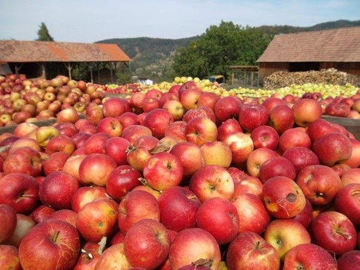
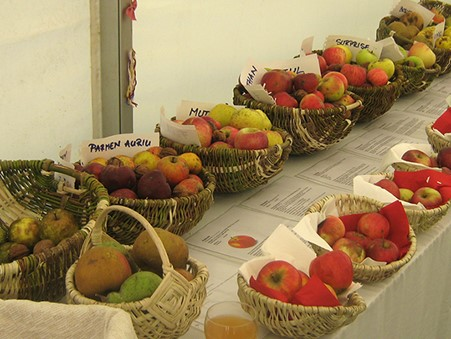
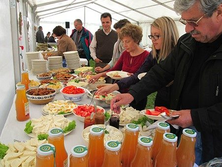

Apple Day in Malancrav
On our annual ‘Apple Day’ in October villagers come to celebrate the end of the picking season in the orchards of Mălâncrav. There are tours along the ‘Apple Path’, demonstrations of work, and displays of a wide range of fruit, including the old native varieties. A buffet lunch is prepared by the ladies of the village and served on long trestle tables with delicious home-made bread, while local musicians entertain the visitors. The day ends with dancing. The original event formed part of a two-year project begun by the MET and the SAVE foundation from Switzerland in 2013, the aim was to add value to native fruit varieties and to traditional farming methods as a way of achieving sustainable income for rural communities. The project was co-financed by a grant from Switzerland through the Swiss Contribution to the enlarged European Union.



